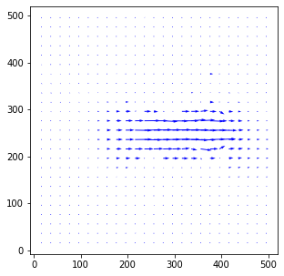
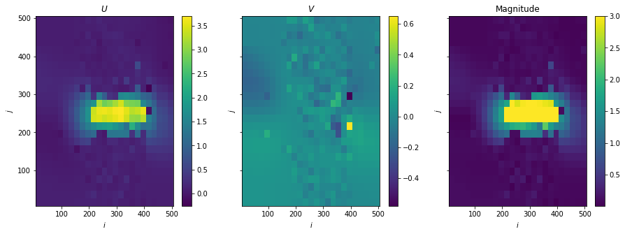
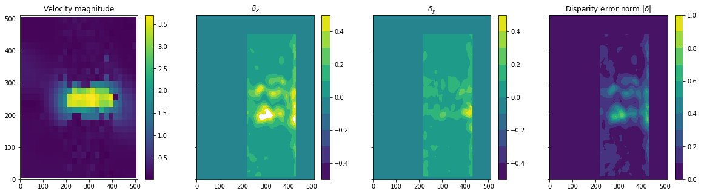
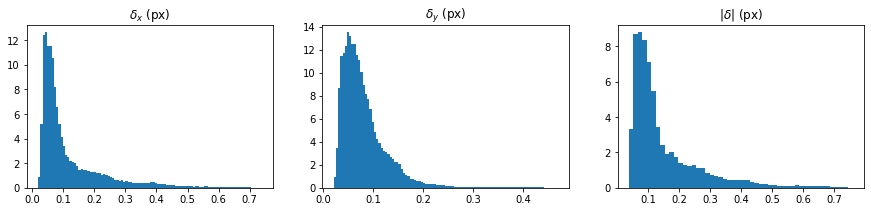

Tutorial on using OpenPIV with PIV Uncertainty Quantification
Authors: @lento234, @alexlib
Documentation: https://pivuq.readthedocs.io/en/latest/
[14]:
# If you have not installed pivuq yet:
# !conda activate openpiv
# !pip install pivuq # or !pip install git+https://github.com/lento234/pivuq
[15]:
%load_ext watermark
The watermark extension is already loaded. To reload it, use:
%reload_ext watermark
[16]:
import pivuq
from openpiv import tools, pyprocess, scaling, validation, filters
import numpy as np
import matplotlib.pyplot as plt
[17]:
%watermark -iv
pivuq : 0.3.1
numpy : 1.21.2
openpiv : 0.23.8
matplotlib: 3.5.2
sys : 3.9.7 (default, Sep 16 2021, 16:59:28) [MSC v.1916 64 bit (AMD64)]
Obtain images and ground truth data from pivuq
[18]:
# we can run it from any folder
# path = os.path.dirname(os.path.abspath(__file__))
frame_a = tools.imread( 'https://github.com/lento234/pivuq/raw/main/examples/data/particledisparity_code_testdata/B00010.tif')
frame_b = tools.imread( 'https://github.com/lento234/pivuq/raw/main/examples/data/particledisparity_code_testdata/B00011.tif')
image_pair = np.clip(np.array([frame_a, frame_b]), 0, 255).astype('uint8')
[19]:
plt.figure(figsize=(12,12))
plt.imshow(np.stack([image_pair[0],0*image_pair[0],image_pair[1]],axis=2)*3)
[19]:
<matplotlib.image.AxesImage at 0x1b7aaa8af40>

PIV cross-correlation using OpenPIV
[20]:
%%time
window_size = 24
overlap = int(window_size * 0.5)
search_area_size = 32
u, v, sig2noise = pyprocess.extended_search_area_piv(
frame_a, frame_b,
window_size=window_size,
overlap=overlap,
dt=1,
search_area_size=search_area_size,
sig2noise_method='peak2peak')
# print(u,v,sig2noise)
x, y = pyprocess.get_coordinates(image_size=frame_a.shape, search_area_size=search_area_size, overlap=overlap)
u, v, mask = validation.sig2noise_val(u, v, sig2noise, threshold = 1.3)
u, v, mask = validation.global_val(u, v, (-1000, 2000), (-1000, 1000) )
u, v = filters.replace_outliers(u, v, method='localmean', max_iter=10, kernel_size=2)
x, y, u, v = scaling.uniform(x, y, u, v, scaling_factor = 1)#96.52)
# Save
tools.save(x, y, u, v, mask, 'test_uq.vec')
Wall time: 714 ms
[21]:
fig, ax = plt.subplots(figsize=(5,5))
tools.display_vector_field('test_uq.vec', scale=50, width=0.0035, ax = ax)

[21]:
(<Figure size 360x360 with 1 Axes>, <AxesSubplot:>)
Uncertainty quantification
Based on paper and source code:
Sciacchitano, A., Wieneke, B., & Scarano, F. (2013). PIV uncertainty quantification by image matching. Measurement Science and Technology, 24 (4). https://doi.org/10.1088/0957-0233/24/4/045302.
The mean of disparity set inside a window is defined as:
\[\mu = \frac{1}{N}\sum_{i\in N} c_i d_i,\]
where \(c_i = \sqrt{\Pi(x_i)}\) for \(i=1,2,...,N\).
The standard deviation of disparity set inside a window is defined as:
\[\sigma = \sqrt{\frac{\sum_{i\in N}c_i (d_i - \mu)^2}{\sum_{i\in N}c_i}}.\]
Thus, the instantaneous error (estimate) vector is defined as:
\[\hat{\boldsymbol{\delta}} = \{\hat{\delta}_u,\hat{\delta}_v\} = \sqrt{\boldsymbol{\mu}^2 + \left(\frac{\boldsymbol{\sigma}}{\sqrt{N}}\right)^2}\]
Loading PIV vectors
[22]:
data = np.loadtxt('test_uq.vec', skiprows=1).T
I, J = np.unique(data[0]).shape[0], np.unique(data[1]).shape[0]
X = np.reshape(data[0], (I, J)) # x-coordinates
Y = np.reshape(data[1], (I, J)) # y-coordinates
U = np.stack((np.reshape(data[2], (I, J)), np.reshape(data[3], (I, J))))
# X_i, Y_i = np.meshgrid(np.arange(I)*overlap, np.arange(J)*overlap)
[23]:
fig, axes = plt.subplots(ncols=3, sharex=True, sharey=True, figsize=(15, 5))
for i, (ax, var) in enumerate(zip(axes[:2], ["U", "V"])):
im = ax.pcolormesh(X, Y, U[i])
fig.colorbar(im, ax=ax)
ax.set(title=f"${var}$")
ax = axes[-1]
im = ax.pcolormesh(X, Y, np.linalg.norm(U, axis=0), vmax=3)
fig.colorbar(im, ax=ax)
ax.set(title="Magnitude")
for ax in axes:
ax.set(xlabel="$i$", ylabel="$j$")

UQ using PIVUQ
[24]:
%%time
X_d, Y_d, delta, N, mu, sigma = pivuq.disparity.sws(
image_pair,
U,
window_size=window_size, # Similar to PIV window size
window="gaussian", # Best
radius=1,
sliding_window_subtraction=True,
roi=[10, 450, 220, 430],
velocity_upsample_kind="linear",
warp_direction="center", # Depends on original PIV algorithm: "center" is typical
warp_order=-1, # Whittaker interpolation
warp_nsteps=1, # Depends on original PIV: 1 step is standard
)
Wall time: 1.45 s
Plot disparity fields
[25]:
fig, axes = plt.subplots(ncols=4, sharex=True, sharey=True, figsize=(20, 5))
# Magnitude
ax = axes[0]
im = ax.pcolormesh(X, Y, np.linalg.norm(U, axis=0))
fig.colorbar(im, ax=ax)
ax.set(title="Velocity magnitude")
# Disparity error components
for i, (ax, var) in enumerate(zip(axes[1:3], ["x", "y"])):
im = ax.contourf(X_d, Y_d, delta[i], np.linspace(-0.5, 0.5, 11))
fig.colorbar(im, ax=ax)
ax.set(title=f"$\delta_{var}$")
# Disparity error norm
ax = axes[3]
im = ax.contourf(X_d, Y_d, np.linalg.norm(delta, axis=0), np.linspace(0, 1, 11))
fig.colorbar(im, ax=ax)
ax.set(title="Disparity error norm $|\delta|$");

Plot disparity histogram
[26]:
fig, axes = plt.subplots(ncols=3, figsize=(15, 3))
for i, (ax, label) in enumerate(zip(axes[:2], [r"$\delta_x$ (px)", r"$\delta_y$ (px)"])):
values = delta[i].ravel() # Ignoring *zero*-disparity region
ax.hist(values[np.abs(values) > 0], bins=100, density=True)
ax.set(title=label)
ax = axes[-1]
values = np.linalg.norm(delta, axis=0).ravel()
ax.hist(values[np.abs(values) > 0], bins=50, density=True)
ax.set(title="$|\delta|$ (px)");
